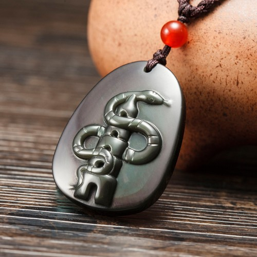

Tips：农历生肖运势即将进入2018年狗年，属牛2018年运势及运程抢先看，新年早开运，狗年求吉祥！
属牛2017年运势及运程详解
出生年份：2009、1997、1985、1973、1961、1949年。
属牛人2017年事业运势
子玉风水大师点评——全力以赴 慎防阴谋
生肖属牛的人，进入2017丁酉鸡年，今年运势大有起色，运势畅旺，气势如虹，正是大展鸿图的良好时机！工作方面得心应手，但可惜因有「五鬼」凶星出现在命宫中，警示将会遇到不少从中作梗，阴谋破坏的人；若不小心妥善处理，便很可能导致计划枝节横生、或甚至功败垂成！属牛的人今年事业的成败，主要视乎能否平定那些有心搞破坏的人而定，所以切勿掉以轻心。此外，因又有「官符」凶星照命，警示今年易惹官非诉讼，必须奉公守法，以免会有牢狱之灾！今年诉讼不宜，所以尽可能庭外和解，以和为贵！幸而因为有「将星」在命宫中坐镇，群丑辟易，这预示属牛的人若能不屈不挠，全神贯注地工作，必定可以击败劲敌，夺得辉煌成果。全年来看，属牛的人上半年会有较多阻滞，而下半年的运势则畅顺得多；尤以年尾两个月的运势最为佳妙，倘若能好好把握时机，很可能名利双收！今年工作进展畅顺的月份，是农历的三月、六月、七月、八月、十一月及十二月，好好把握时机奋发向上。

属牛人2017年财运精准预测
子玉风水大师点评——正财富足 切戒浪费
属牛的人，今年的财运颇佳，正财收入富足无虞，而且横财亦颇为畅旺，财源广进！今年有利投资创业或置业，将会有利可图；但切勿太贪得无厌，以免因而误堕金钱圈套。今年虽然会有不少收入，但可可惜多是易来易去的浮财，易泄而难聚，故此必须尽量节省，切戒奢侈浪费！请注意今年将会有不少额外开支，所以应该及早储蓄，未雨绸缪方为上策。今年财运畅旺的月份，是农历三月、七月、八月、十一月及十二月。今年财运低迷的月份，是农历二月、五月、六月、九月及十月；农历正月、六月、八月及十月需慎防受骗破财。
属牛人2017年健康运势
子玉风水大师点评——注意卫生 慎防传染
属牛的人，今年健康平平，必须密切注意饮食卫生，以免病从口入；此外，慎勿过劳，以免病魔得以乘虚而入。此外，今年亦需密切注意水上安全，切勿疏忽大意。因有「飞符」凶星出现在命宫中，警示今年易受传染病困扰，在公共场所必须密切注意清洁卫生，并应尽量远离传染病流行的区域。请记紧切勿沾惹毒品，以及应尽量远离酒色。今年健康易出问题的月份，是农历的二月、五月、六月、八月、九月及十月。
属牛人2017年爱情婚姻运势
子玉风水大师点评——时冷时热 慎防破坏
属牛的人，今年感情发展并不十分畅旺，时好时坏，上半年较多阻滞，但下半年则会有较佳发展。因有「五鬼」凶星照命，警示需慎防会有小人暗中破坏感情，或有第三者闯入；必须冷静处理，切勿太感情用事而误己误人。请紧记切勿冷落爱侣，必须多些沟通关怀。今年感情进展较佳的月份，是农历三月、八月、十一月及十二月，好好把握时机来培养情苗。
属牛人2017年开运吉祥物

属牛人2017年吉凶方位
属牛的人今年的三个生旺吉方，是西方、东南及西南；若能把睡床、工作台和沙发摆放在屋内这三个方位上，便可符合这生肖今年的风水趋吉之道，有助改善流年运程。
倘若未能如此，最少亦要把这三种最重要的家具避开南方及北方，以符合避凶之道。以上所提出的吉凶方位，是纯以生肖属牛的人来计算；而与其它生肖无关，请勿混淆。
属牛人2017年幸运色
属牛的人今年的生旺颜色是红、黄以及紫色；若能利用这些颜色来布置房间、或配衬衣物，这会对改善流年运程大有帮助！属牛的人今年忌绿色及黑色，最好能尽量避免使用。
属牛人2017年幸运数字
属牛的人今年的生旺数字是1及6。
属牛的青少年2017年运势
今年领悟力特强，容易吸收新知识；若能专心向学，成绩将突飞猛进！但可惜今年非但容易招惹是非，而且易被损友诱惑，故此必须孰品励学，洁身自爱，以免误入歧途。密切注意饮食卫生，慎防病从口入。
属牛的女性2017年运势
今年财运颇佳，家庭收入丰足无虞；但切勿受人怂恿而仓猝投资，以免误入金钱圈套。夫妻和顺，但家人之间会有诸多是非。属牛的少女，今年感情急冷怱热，难以捉摸，很可能会有第三者闯入，切勿太感情用事。
属牛的人2018年运程已经发布，敬请关注！
不同牛年出生的属牛人2017年运势详解
2009年属牛的人2017年运程
2009年出生的人，今年领悟力特强，容易吸收新知识，成绩将会突飞猛进！注意饮食卫生，以免病从口入。
1997年属牛的人2017年运程
1997年出生的人，今年感情坎坷，慎防有人暗中破坏，切忌感情用事。密切注意水上安全，切勿疏忽大意。
1985年属牛的人2017年运程
1985年出生的人，今年易犯小人，必须设法改善人缘，才可脱颖而出。财星高照，投资及置业均有利可图。85年属牛人今年若要开运解灾，增旺运势，可佩戴本站周易专家团队精心设计的增庆堂属牛2017吉祥物吊坠，该吉祥物图案为一条灵蛇盘绕着宝塔，采用高档彩虹眼黑曜石精雕而成，寓意您在2017年多得贵人提携，职位不凡，考试扬名，爱情甜蜜；同时亦能防范小人，免是非官讼之灾。亦可同时佩戴增庆堂属牛六合贵人手链，更具功效。开车人士，可在爱车挂上一串增庆堂福上添福琉璃挂件，以保行车安全。
1973年属牛的人2017年运程
1973年出生的人，今年财运颇佳，正财收入丰足，但投资宜慎。若能全神贯注工作，定可夺取得辉煌成果。73年属牛今年若要开运解灾，增旺运势，可佩戴本站周易专家团队精心设计的增庆堂属牛2017吉祥物吊坠，该吉祥物图案为一条灵蛇盘绕着宝塔，采用高档彩虹眼黑曜石精雕而成，寓意您在2017年多得贵人提携，职位不凡，考试扬名，爱情甜蜜；同时亦能防范小人，免是非官讼之灾。亦可同时佩戴增庆堂属牛六合贵人手链，更具功效。开车人士，可在爱车挂上一串增庆堂福上添福琉璃挂件，以保行车安全。
1961年属牛的人2017年运程
1961年出生的人，今年夫妻和顺，但家人之间会有诸多是非。今年诉讼不宜，尽可能庭外和解，以和为贵。61年属牛人今年若要开运解灾，增旺运势，可佩戴本站周易专家团队精心设计的增庆堂属牛2017吉祥物吊坠，该吉祥物图案为一条灵蛇盘绕着宝塔，采用高档彩虹眼黑曜石精雕而成，寓意您在2017年多得贵人提携，职位不凡，考试扬名，爱情甜蜜；同时亦能防范小人，免是非官讼之灾。亦可同时佩戴增庆堂属牛六合贵人手链，更具功效。开车人士，可在爱车挂上一串增庆堂福上添福琉璃挂件，以保行车安全。
1949年属牛的人2017年运程
1949年出生的人，今年健康似是而非，除了要注意饮食卫生，并需慎防传染，慎防误堕入金钱陷阱。
属牛人2017年体年每月运势
农历正月 公历2017年2月3日至3月5日
本月运势反复，慎防破坏
属牛的人今年运势畅旺，大吉大利！但可惜年初这个月的运势平平，所以暂时宜守不宜攻，以免出师不利！工作进展反反复覆，未能一气呵成！在这段期间最重要的，是要小心提防那些搞破坏的人，注意他们的举动，实行兵来将挡，水来土掩；但千万不要故意挑衅。财运尚可，正财收入无虞，但横财勿贪，否则便会后悔莫及！此外，并需慎防受骗。健康良好，但必须小心节制饮食。感情若即若离，得失随缘。
农历二月 公历2017年3月6日至4月4日
本月远离引诱，慎防官非
因为有「官符」凶星照命，所以这个月的运势风雨飘摇！非但工作进展诸多阻滞，而且还会有诸多是非纷争。在一这段期间最重要的，是必须坚定立场，奉公守法，切勿被损友引诱而误入歧途，否则必定法网难逃，身败名裂。财星破损，理财稍一不慎，便很可能钱财大量流泄不止！倘若有人游说投资，最好婉言相拒，以免输得焦头烂额。健康情况下滑，切勿过分劳累，以免把身体压垮。这个月不易与异性投缘。
农历三月 公历2017年4月5日5至月5日
本月财运亨通，广结善缘
否极泰来，这个月因为命宫中吉星拱照，故此晦气全消，气象一新，正是一展身手，力争上游的大好时机。工作进展畅顺，人事纷争亦渐告平息！在这段期间最重要的，是要主动与人沟通及表达诚意，广结善缘，这将会对未来事业发展大有裨益！此外，请紧记必须遵守履行诺言，切勿失信。财运亨通，不单正财收入将大有増长，而且横财亦转佳，但切勿过贪，这个月社交应酬繁忙，很可能结识一位动人的异性。
农历四月 公历2017年5月6日至6月5日
本月形势暧昧，分清敌友
这个月的运势反复向下，暗涌潜伏，故此必须保持警惕戒备，以免大意失荆州。工作方面人事变化多端，形势暧昧！在这段期间最重要的，是必须冷静地看清楚形势，谋定而后动，以免吃力不讨好！此外，并需带眼识人，分清敌友，以防被身边披着伪装的虎狼出卖。财运平平，但只要知足而不多贪求，这个月经济上肯定不会出问题。健康尚可，但需密切注意水上安全，切勿疏忽大意。感情乏善可陈，必须随缘。
农历五月 公历2017年6月6日至7月7日
本月压力沉重，钱财易泄
因为命宫中凶星混杂，故些这个月的运势一落千丈，工作进展诸多阻滞，而且备受排挤，压力甚为沉重！在这一段期间最重要的，是要尽量做好自己的本份，其它的各种是是非非切勿理会，以免令自己的事业前途雪上加霜。财星破损，钱财易泄难聚，理财必须加倍小心谨慎，投资及赌博均可免则免，以免出现经济危机。健康欠佳，必须密切节制饮食，以防血压和心脏受损。这个月切勿冷落爱侣，必须多些沟通关怀。
农历六月 公历2017年7月8日至8月7日
本月自求多福，同舟共济
这个月的运势迂回向上，在峰回路转之中，渐入佳境！月初仍会有不少困阻，但月中便开始好转。在这段期间最重要的，是要自力更生，自求多一幅，尽量充实自己以打稳基础，藉以确定在激烈的竞争中能屹立不倒！此外，应设法与同事衷诚合作，同舟共济。财运略有起色，但投资及赌博仍是可免则免！并需慎防误堕金钱陷阱。健康好转，但仍需注意饮食卫生，以防病从口入。这个月对爱侣切勿诸多挑剔，以免感情破裂。
农历七月 公历2017年8月8日至9月7日
本月力争上游，公正无私
因为「将星」吉星坐镇在命宫中，故此这个月的运势有如日中天，气势如虹！工作进展畅顺，而且小人也会畏避退缩，正是力争上游的大好时机！在这段期间最重要的，是处事待人必须公正无私，对事不对人，尽量令人心悦诚服，这将会对事业发展有意想不到的帮助！财运亨通，正财收入丰厚，可作多元化投资，有利可图！但需小心看管钱财，以免有盗窃之灾。健康良好，但切勿沉迷酒色或沾染麻醉毒品。
农历八月 公历2017年9月8日至10月8日
本月贵人指引，抢占先机
这个月的运势依然畅旺，工作得心应手，而且很可能有贵人指引相助，可收事半功倍之效！在这段期间最重要的，是必须当机立断，抢夺先机，这样才可稳操胜券；慎勿犹豫失机而被人捷足先登，咎由自取。财星高照，财源广进；但横财切勿过贪，以免最终得不偿失！此外，月尾并需慎防受骗破财。健康尚可，但在公共场所必须密切注意清洁卫生，以免患上传染病。这个月易得人缘，亦易与异性擦出感情火花。
农历九月 公历2017年10月9日至11月7日
本月以退为进，积谷防饥
这个月运势反复向下，工作进展往往节外生枝，稍有疏忽，便很可能半途夭折而前功尽废，而且还会容易招若小人。在这期间最重要的，是要懂得以柔制刚，以退为进；既要保存自己的利益，同时又要不触怒对手。财星破损，钱财易泄难聚，必须量入为出，以免出现周转不灵！最好是多节省储蓄，以备不时之需，身体抵抗力弱，慎勿过劳，以免病魔得以乘虚而入。感情方面会有诸多闲言闲语，必须洁身自爱。
农历十月 公历2017年11月8日至12月7日
本月妄动招悔，慎防圈套
因有「五鬼」凶星照命，这个月的运势晦气弥漫，工作环境多变，人事变得愈来愈复杂，前景暧昧不清。在这段期间最重要的，是要小心提防那些有心搞破坏的人，必须看清形势，谋定而后动，以免被人出卖或暗算。此外，并需慎防商业圈套，签订买卖合约必须加倍小心谨慎。财星破损，切勿投资赌博，以免血本无归！并请紧记切戒贪念，以免堕人金钱陷阱。身心俱疲，必须尽量争取足够休息，以免积劳成疾。
农历十一月 公历2017年12月8日至2018年1月5日
本月阴霾尽消，大展鸿图
这个月因有「三台」吉星坐镇在命宫中，有如日正当中，阴霾尽消，气象一新！工作困阻一一消除，而且人事纷争亦将日渐消除，正是专心工作，尽力争取工作表现的好时机！在这段期间最重要的，是要勇于创新求进，千万不可故步自封，这样才可百尺竿头，更进一步！这个月财运大有起色，适宜投资创业或购置物业，将会有利可图。身心康泰，但切戒暴饮暴食。感情甜蜜温馨，大有进展；但切勿因而耽误工作。
农历十二月 公历2017年1月6日至2月3日
本月灵感涌现，迎刃而解
属牛的人今年下半年的运势较佳，年尾这个月因为吉星拱照，故此气势如虹，虽有困阻亦可迎刃而解！工作灵感涌现，创意特别丰富。在这段期间最重要的，是切勿被胜利冲昏了头脑，必须保持冷静，在努力工作之余，必须慎防因小人暗中破坏而变得夜长梦多。财运颇佳，将会有不少额外收入，但可惜开支亦颇多，故此若不谨慎理财，恐怕难有积聚。这个月喜气洋洋，易与异性投缘，感情生活多姿多彩。
2018年运程十二生肖运势：属牛2018年运势及运程
读过此篇文章的网友还读过：
☑ 属猪的人2017年运程
☑ 属狗的人2017年运程
☑ 属蛇的人2017年运程
☑ 属虎的人2017年运程
☑ 属龙的人2017年运程
☑ 属鸡的人2017年运程